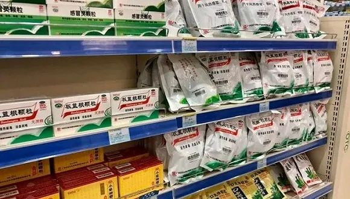

对话|意大利前高官谈疫情：政府应对太慢，医护人员是英雄
原文链接 备份链接 【财新网】（记者 刘登辉）作为欧洲第一个宣布全国封锁的国家，新冠疫情肆虐的意大利保卫战不断升级。截至当地时间3月16日下午6时，意大利新冠病毒感染累计确诊已达27980例，确诊病例全球第二，近三日单日新增都超过3000 …

记者 | 金淼
编辑 | 许悦
“
每逢疫情，板蓝根都要被抢购。
”
随着新冠疫情在全球范围内的蔓延，中国的治疗经验也不断被推广出海。3月17日，国务院联防联控机制召开的新闻发布会上，科技部生物中心主任张新民就表示，法匹拉韦、恢复期血浆、中药等重点药物已向发生疫情的相关国家提供。但是未详细透露具体提供的中药品种。
中药疗法在新冠治疗中，受到追捧。3月10日，国家卫健委、国家中医管理局印发的《新型冠状病毒肺炎诊疗方案（试行第七版）》中，莲花清瘟、藿香正气、金花清感颗粒、安宫牛黄丸等中成药继续在列。
与此同时，海外的中药需求也大幅增加。路透社3月10日报道表示，纽约和旧金山两大城市的中草药商铺出现供货紧张，一位中医在采访中表示，其诊所对中草药需求激增，金银花和板蓝根冲剂成为畅销品，价格正迅速上涨。
据《上海证券报》报道，以岭药业的莲花清瘟和聚协昌的金花清感两款中药，已随中国医疗专家驰援意大利、伊拉克等国家。
随着中药出海升温，有投资者开始向上市公司询问板蓝根、金银花等中药材出口情况。
3月13日，华润三九在投资者关系互动平台上表示，公司海外业务在公司总体业务中占比极小，板蓝根有少量出口业务（近期部分出口用于捐赠）。随着国内新冠肺炎疫情得到有效控制，海外国家疫情形势日益严峻，公司已在研究中药配方颗粒等品种拓展海外市场的机会。
但实际上，1月21日国家卫健委官方微博健康中国就已经对板蓝根用于新冠肺炎预防的说法进行辟谣，和平里医院呼吸科主任医师张骅表示，板蓝根适用于治疗风热感冒、病毒性感冒等热性疾病的治疗，有一定的抗病毒效果，但是对冠状病毒是不可能有效的。
板蓝根在2003年非典疫情暴发期间，名声大噪，作为疫情概念品种，每当疫情出现，便会引发抢购。界面新闻记者在国家药品监督管理局网站检索板蓝根药品相关情况，显示共有1251项纪录。医药魔方此前报道，2017年国内板蓝根颗粒生产企业有726家，此外还有糖浆剂、软胶囊、泡腾片、咀嚼片、分散片等各种剂型。
但板蓝根颗粒的原料板蓝根饮片一直以来是不合格饮片的重灾区，2017年2月，原国家食药监总局发布的《总局关于54批次中药饮片不合格的通告(2017年第21号)》显示，在54批不合格的中药饮片中，板蓝根不合格数为28批次，占一半以上。
在2018年3月，国家药典委员会发布《关于板蓝根颗粒质量标准拟增修订的公示》，在板蓝根颗粒的制法、鉴别等方面进行了修订，并增加了含量测定项。

图片来源：丁香园
虽然修订板蓝根颗粒标准，推动了板蓝根颗粒产品质量的提升，但是同时其也带来了板蓝根颗粒产品新一轮的涨价。但关于板蓝根的疗效之争，从非典到今天一直都没有落下。
未经授权 禁止转载

原文链接 备份链接 【财新网】（记者 刘登辉）作为欧洲第一个宣布全国封锁的国家，新冠疫情肆虐的意大利保卫战不断升级。截至当地时间3月16日下午6时，意大利新冠病毒感染累计确诊已达27980例，确诊病例全球第二，近三日单日新增都超过3000 …
原文链接 备份链接 随着新冠肺炎疫情在全球范围内扩散，“口罩荒”现象明显增多，不少国家开始禁止口罩出口。 全球多地口罩告急 韩国买口罩实行单双号 随着新冠肺炎疫情加剧，韩国市场上“口罩荒”日益严重。韩国将实施口罩限购措施：按照出生年份的奇 …
原文链接 备份链接 日内瓦时间 2 月 28 日，世界卫生组织总干事谭德塞在媒体例行会上宣布，WHO 将新冠肺炎疫情的全球风险级别从“高风险”提高至“非常高”。谭德塞表示，这是因为目前新冠肺炎疫情在全球多个国家蔓延， …
原文链接 备份链接 澎湃新闻记者 刘栋 新冠肺炎疫情正在全球范围内急速发展。 刚刚过去的周末，全球多国疫情出现恶化。在东亚，韩国确诊病例增加了195%；在南欧，意大利病例增加了近50倍；伊朗和日本的病例也在快速上升，多个国家报告出现首例确 …
原文链接 备份链接 刚果（布）马亚-马亚国际机场，旅客正在接受体温检测。图片来源：WHO/Elombat D. 记者 | 潘金花 “ 除了肯尼亚、南非等，多数非洲国家的重症监护医疗设施都很有限，一家医院可能只有10个床位可以满足重症监护条 …